|
| |||||||||||||
|
|
||
Tangent Bug [216] serves as an improvement to the Bug2 algorithm in that it determines a shorter path to the goal using a range sensor with a 360 degree infinite orientation resolution. Sometimes orientation is called azimuth. We model this range sensor with the raw distance function 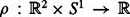. Consider a point robot situated at 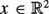 with rays radially emanating from it. For each θ ∊ S1, the value ρ(x, θ)is the distance to the closest obstacle along the ray from x at an angle θ. More formally,
| (2.3) | 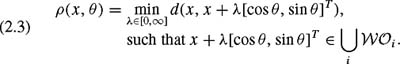
|
Note that there are infinitely many θ ∊ S1 and hence the infinite resolution. This assumption is approximated with a finite number of range sensors situated along the circumference of a circular mobile robot which we have modeled as a point.
Since real sensors have limited range, we define the saturated raw distance function, denoted 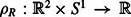, which takes on the same values as ρ when the obstacle is within sensing range, and has a value of infinity when the ray lengths are greater than the sensing range, R, meaning that the obstacles are outside the sensing range. More formally,
The Tangent Bug planner assumes that the robot can detect discontinuities in ρR as depicted in figure 2.5. For a fixed 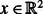, an interval of continuity is defined to be a connected set of points x + ρ(x, θ)[cos θ, sin θ]T on the boundary of the free space where ρR(x, θ)is finite and continuous with respect to θ.
The endpoints of these intervals occur where ρR(x, θ) loses continuity, either as a result of one obstacle blocking another or the sensor reaching its range limit. The endpoints are denoted Oi. Figure 2.6 contains an example where ρR loses continuity. The points O1, O2, O3, O5, O6, O7, and O8 correspond to losses of continuity associated with obstacles blocking other portions of 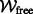 note the rays are tangent to the obstacles here. The point O4 is a discontinuity because the obstacle boundary falls out of range of the sensor. The sets of points on the boundary of the free space between O1 and O2, O3 and O4, O5 and O6, O7 and O8 are the intervals of continuity.
Just like the other Bugs, Tangent Bug iterates between two behaviors: motion-to-goal and boundary-following. However, these behaviors are different than in the Bug1 and Bug2 approaches. Although motion-to-goal directs the robot to the goal, this behavior may have a phase where the robot follows the boundary. Likewise, the boundary-following behavior may have a phase where the robot does not follow the boundary.
The robot initially invokes the motion-to-goal behavior, which itself has two parts. First, the robot moves in a straight line toward the goal until it senses an obstacle R units away and directly between it and the goal. This means that a line segment connecting the robot and goal must intersect an interval of continuity. For example, in figure 2.7, 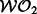 is within sensing range, but does not block the goal, but does. When the robot initially senses an obstacle, the circle of radius R becomes tangent to the obstacle. Immediately after, this tangent point splits into two Oi 's, which are the endpoints of the interval. If the obstacle is in front of the robot, then this interval intersects the segment connecting the robot and the goal.
The robot then moves toward the Oi that maximally decreases a heuristic distance to the goal. An example of a heuristic distance is the sum d(x, Oi) +d(Oi, qgoal). (The heuristic distance can be more complicated when factoring in available information with regard to the obstacles.) In figure 2.8 (left), the robot sees 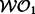 and drives to O2 because i = 2 minimizes d(x, Oi) + d(Oi, qgoal). When the robot is located at x,it cannot know that 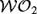 blocks the path from O2 to the goal. In figure 2.8 (right), when the robot is located at x but the goal is different, it has enough sensor information to conclude that 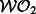 indeed blocks a path from O2 to the goal, and therefore drives toward O4. So, even though driving toward O2 may initially minimize d(x, Oi) + d(Oi, qgoal) more than driving toward O4, the planner effectively assigns an infinite cost to d(O2, qgoal) because it has enough information to conclude that any path through O2 will be suboptimal.
The set {Oi} is continuously updated as the robot moves toward a particular Oi, which can be seen in figure 2.9. When t = 1, the robot has not sensed the obstacle, hence the robot moves toward the goal. When t = 2, the robot initially senses the obstacle, depicted by a thick solid curve. The robot continues to move toward the goal, but off to the side of the obstacle heading toward the discontinuity in ρ.For t = 3 and t = 4, the robot senses more of the obstacle and continues to decrease distance toward the goal while hugging the boundary.
The robot undergoes the motion-to-goal behavior until it can no longer decrease the heuristic distance to the goal. Put differently, it finds a point that is like a local minimum of d(·, Oi) + d(Oi, qgoal) restricted to the path that motion-to-goal dictates.
When the robot switches to boundary-following, it finds the point M on the sensed portion of the obstacle which has the shortest distance on the obstacle to the goal. Note that if the sensor range is zero, then M is the same as the hit point from the Bug1 and Bug2 algorithms. This sensed obstacle is also called the followed obstacle. We make a distinction between the followed obstacle and the blocking obstacle. Let x be the current position of the robot. The blocking obstacle is the closest obstacle within sensor range that intersects the segment (1 − λ)x + λqgoal ∀λ ∊λ [0, 1]. Initially, the blocking obstacle and the followed obstacle are the same.
Now the robot moves in the same direction as if it were in the motion-to-goal behavior. It continuously moves toward the Oi on the followed obstacle in the chosen direction (figure 2.10). While undergoing this motion, the planner also updates two values: dfollowed and dreach. The value dfollowed is the shortest distance between the boundary which had been sensed and the goal. Let ∧ be all of the points within line of sight of x with range R that are on the followed obstacle 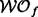, i.e., 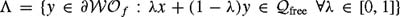. The value dreach is the distance between the goal and the closest point on the followed obstacle that is within line of sight of the robot, i.e.,
When dreach < dfollowed, the robot terminates the boundary-following behavior.
Let T be the point where a circle centered at x of radius R intersects the segment that connects x and qgoal. This is the point on the periphery of the sensing range that is closest to the goal when the robot is located at x. Starting with x = qstart and dleave = d(qstart, qgoal,) see algorithm 3.
Input: A point robot with a range sensor Output: A path to the qgoal or a conclusion no such path exists 1: while True do 2: repeat 3: Continuously move toward the point n ∊{T, Oi} which minimizes d(x, n) + d(n, qgoal) 4: until ▪ the goal is encountered or ▪ The direction that minimizes d(x, n) + d(n, qgoal) begins to increase d(x, qgoal), i.e., the robot detects a "local minimum" of d(·, qgoal). 5: Chose a boundary following direction which continues in the same direction as the most recent motion-to-goal direction. 6: repeat 7: Continuously update dreach, dfollowed, and {Oi}. 8: Continuously moves toward n ∊{Oi } that is in the chosen boundary direction. 9: until ▪ The goal is reached. ▪ The robot completes a cycle around the obstacle in which case the goal cannot be achieved. ▪ dreach < dfollowed 10: end while
See figures 2.11, 2.12 for example runs. Figure 2.11 contains a path for a robot with zero sensor range. Here the robot invokes a motion-to-goal behavior until it encounters the first obstacle at hit point H1. Unlike Bug1 and Bug2, encountering a hit point does not change the behavior mode for the robot. The robot continues with the motion-to-goal behavior by turning right and following the boundary of the first obstacle. The robot turned right because that direction minimized its heuristic distance to the goal. The robot departs this boundary at a depart point D1. The robot continues with the motion-to-goal behavior, maneuvering around a second obstacle, until it encounters the third obstacle at H3. The robot turns left and continues to invoke the motion-to-goal behavior until it reaches M3, a minimum point. Now, the planner invokes the boundary-following behavior until the robot reaches L3. Note that since we have zero sensing range, dreach is the distance between the robot and the goal. The procedure continues until the robot reaches the goal. Only at Mi and Li does the robot switch between behaviors. Figures 2.12, 2.13 contain examples where the robot has a finite and infininte sensing ranges, respectively.
|
|
||
|